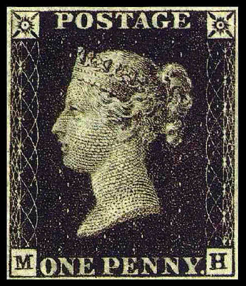

Stamp collecting is an interesting hobby practiced by many people around the world
Here are a collection of some interesting stamp varieties:
This stamp is from Mauritius.
This stamp is called the "Penny Black", and is the first ever postage stamp.

This stamp is called the "Inverted Jenny", and is one of the rarest "errors", or misprinted stamps.


Or click the pic